Hi there! My name is Dineth and I study zoology, botany and conservation biology at Monash University and have a special interest in rainforest ecosystems and their resident amphibian species in tropical regions.
I am and have always been passionate about the beauty of nature and protecting it to the best of my ability. I hope to share my admiration for its beauty through the enclosed ecosystems that I create to illuminate nature’s intricate, fragile and sophisticated elements that often go unnoticed.
As my journey continues, I hope to inspire many others to love and protect nature, as well as spread the unique beauty of our Australian wildlife.
At Terra Rewilding, we offer a range of natural products and services that aim to bring the beauty of nature to your home.
Our mission is to re-integrate nature and its complex and remarkable ecosystems with our more removed human dwellings. We aim to make the concept of ‘ecobrutalism’ a viable reality for our society, to achieve this, however, we must start on a much smaller scale, that being both the miniature planted ecospheres that we can distribute and the native gardens and food forests we could help create.
The scaling of these endeavours will hopefully have measurable positive effects on local ecosystems around Australia, as well as have meaningful impacts on the level of environmental stewardship we can witness in our society. Nature has been proven to bring fulfilment, happiness and an overall improvement to people’s lives. With the stress and disdain that is prevalent in modern life, it becomes even more necessary to embrace the positive energy nature brings.
From our experience, what nature brings most, is clarity, things that feel distant and obscure in our lives and understanding, become concise and digestible, as our true identity as living, breathing beings has been embraced.
We are the environment
it is an extension of us, as we are of it. See yourself in the undergrowth, the canopy and leaf litter
you, are the forest
It seems with the progression of modern society, that people have unravelled towards a detachment from nature. This rift leading to devastation on the global ecosystem in every biome and trophic level. Climate catastrophe is upon us. With your fear intact, please understand and reflect on the importance of our environment and land, use our knowledge for connection and respect for the land on which we reside.
In this manner, we give a most genuine appreciation for the Wurundjeri people for sharing their beautiful land with us in Melbourne, we would be grateful for even a fraction of their knowledge and connection to this land.
We hope Terra Rewilding can have a meaningful impact on the betterment of our Australian and the global environment, and we hope you join us on this journey!
Delivering living ecosystems through craftsmanship, deep knowledge, and care for every animal.
Hands-on expertise designing and building visually stunning, living habitats.
Fully dedicated to meeting the unique needs of every customer and species.
Educating clients on ecosystem dynamics and natural processes every step of the way.
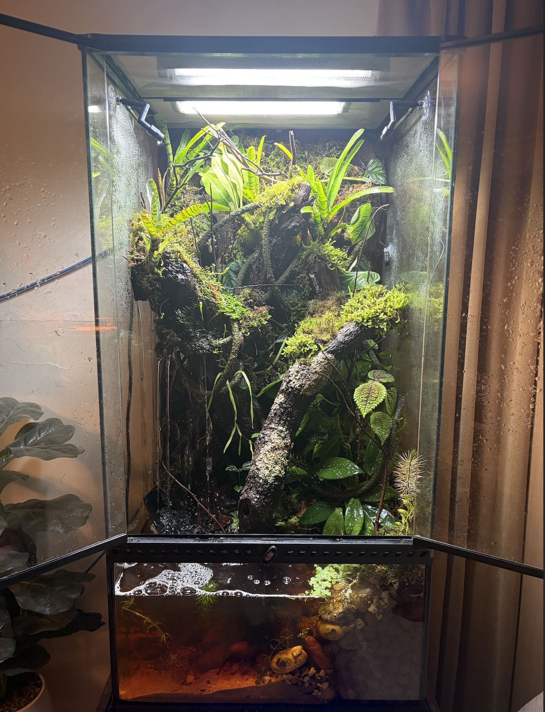
I recently had a custom bioactive terrarium built by Dineth and Jason for my Boyd's forest dragons — the result honestly blew me away... I recently had a custom bioactive terrarium built by Dineth and Jason for my Boyd's forest dragons — the result honestly blew me away. The level of detail is next level. They've gone to incredible lengths to replicate the exact terrain and environment these animals come from. It doesn't just look amazing — it feels like a real, living ecosystem. Every element has clearly been thought through with purpose, creating something both visually incredible and perfectly suited for the animal. What really stood out was their knowledge and craftsmanship. This isn't just a terrarium — it's a fully self-sustaining environment designed to replicate nature as closely as possible, and you can tell they genuinely care about getting it right. The whole process was seamless, and the final product exceeded expectations in every way. If you're even considering going bioactive, do yourself a favour and go with Dineth and Jason. Seriously top-tier work.
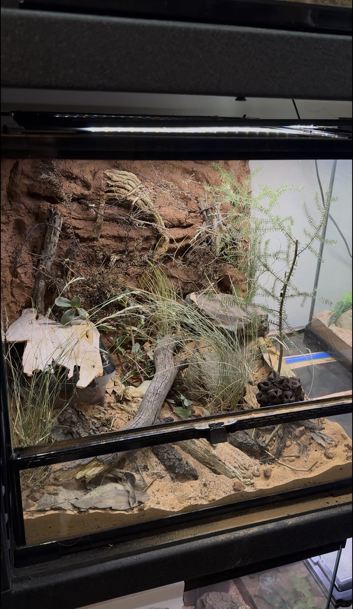
The guys at Terra Rewilding did an amazing job working on a few of my tanks... The guys at Terra Rewilding did an amazing job working on a few of my tanks. They set up incredible habitats for different gecko species and did a great job adjusting everything to my specific needs and those of the species involved. Every time I feed the geckos I can see them using the entire habitat — the tanks look much more interesting than a basic sand-and-ornament setup. It's cool to see the plants growing in. Would definitely give these guys a call if you want a custom natural habitat for your pets.
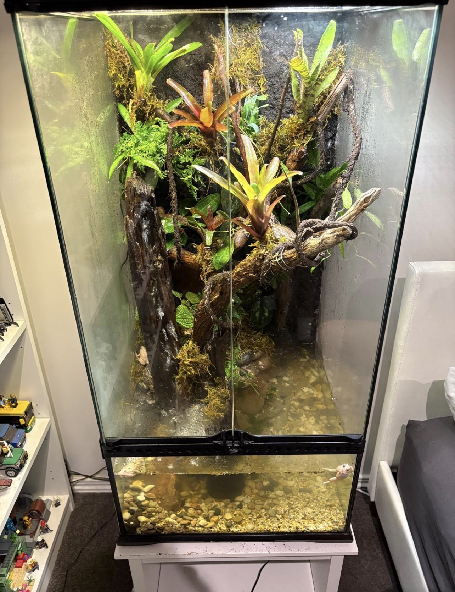
The craftsmanship and attention to detail are outstanding — it's clear a lot of care went into designing something both beautiful and functional... The craftsmanship and attention to detail are outstanding — it's clear a lot of care went into designing something both beautiful and functional. Everything was professionally finished, well thought out, and designed to a very high standard. Communication throughout the process was excellent and the final result exceeded my expectations. I highly recommend to anyone looking for a high-quality custom terrarium hardscape.
Live organisms to build thriving ecosystems.
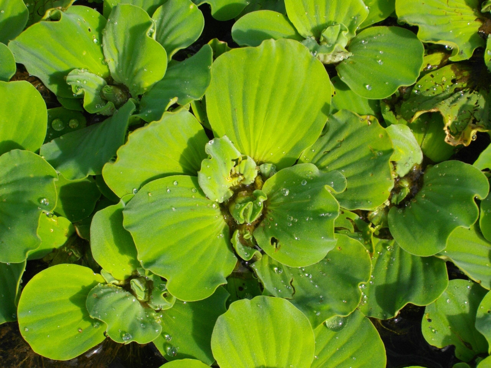
Floating aquatic plant ideal for aquariums and ponds. Helps reduce nitrates and provides natural shade.
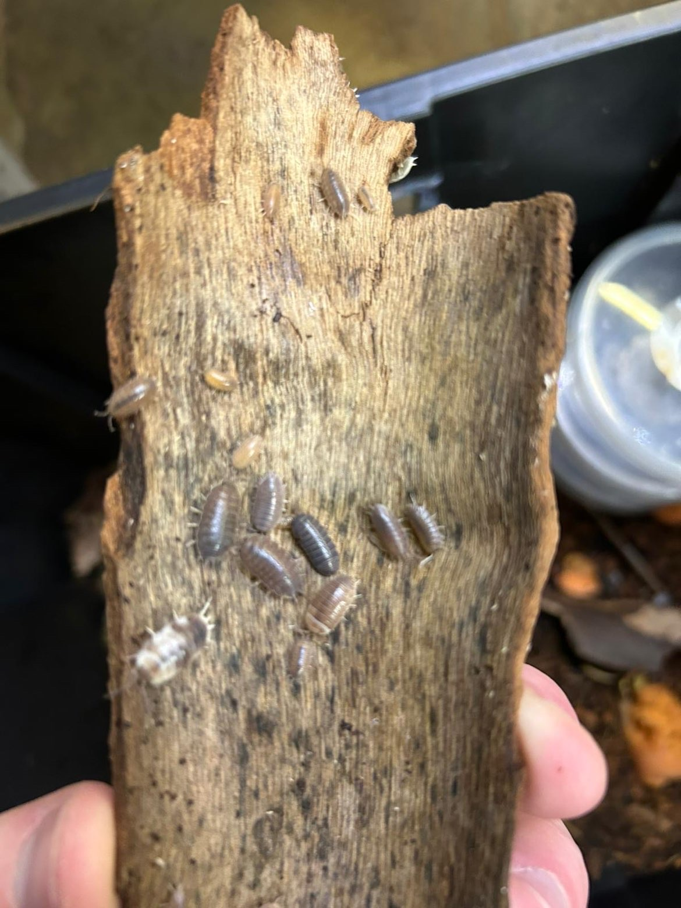
Reliable bioactive cleanup crew species perfect for terrariums and humid environments.
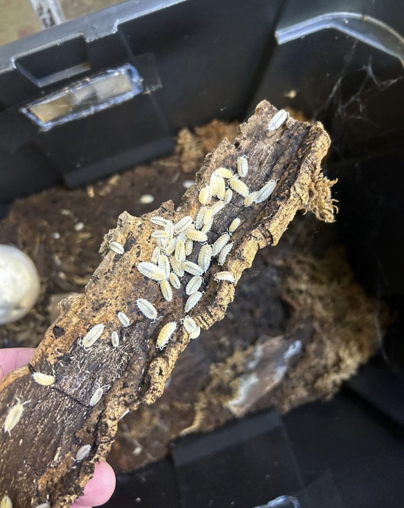
Bright morph isopods that thrive in bioactive setups and assist in waste breakdown.
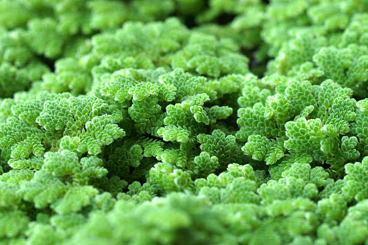
Fast growing floating plants ideal for native ecosystems.
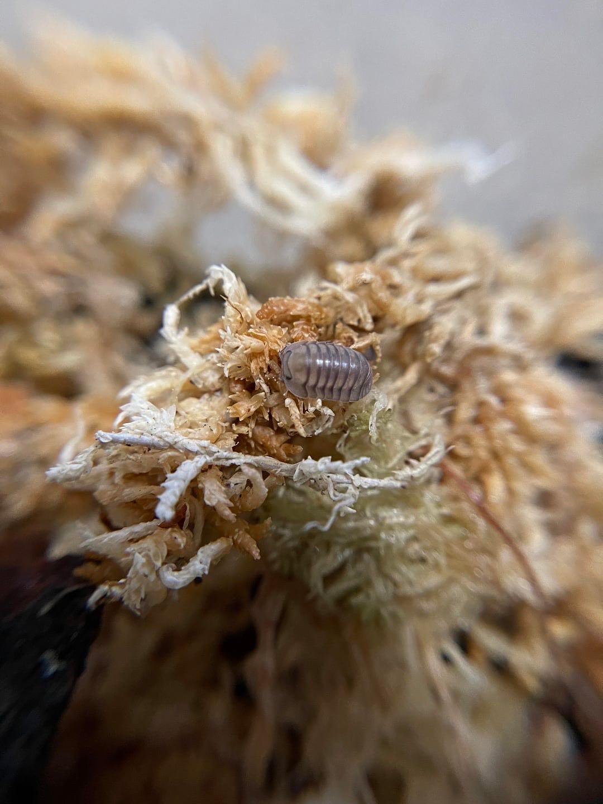
Fast-breeding and active cleanup species ideal for dynamic bioactive enclosures.
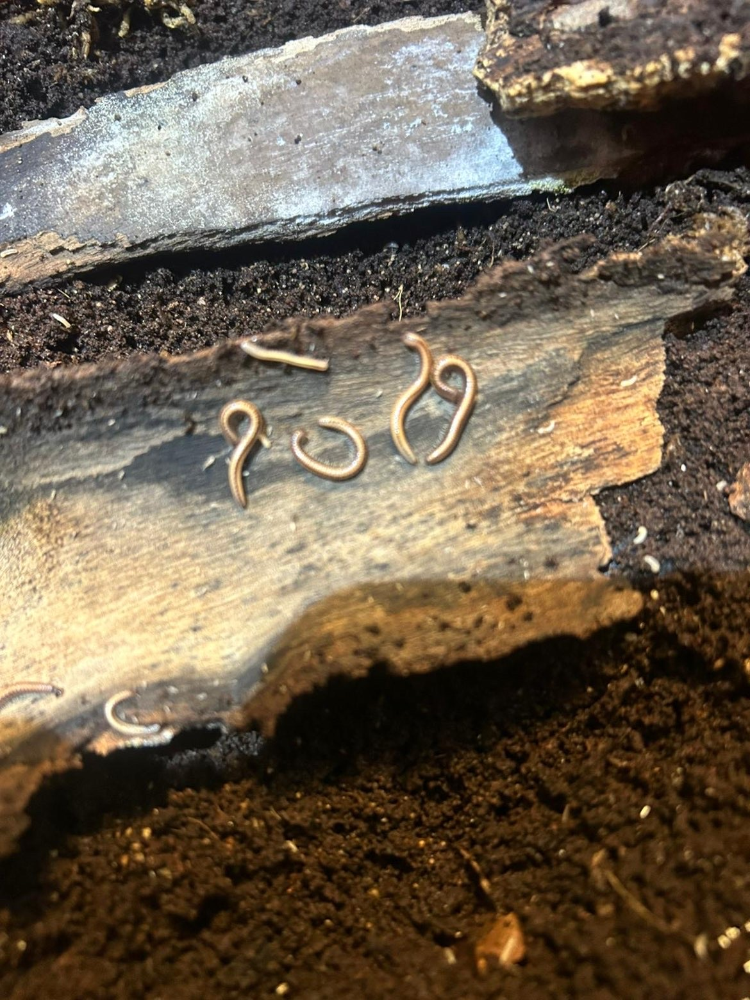
Striped decomposers that enrich soil and support long-term ecosystem balance.
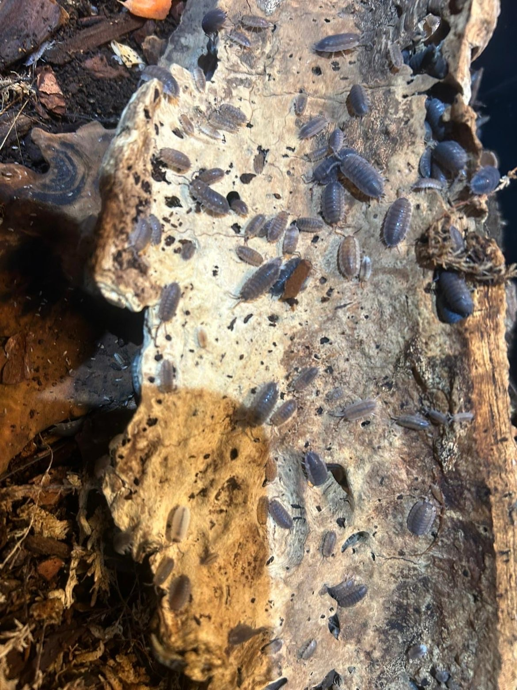
Vibrant blue isopods known for their hardiness and efficiency in bioactive setups.
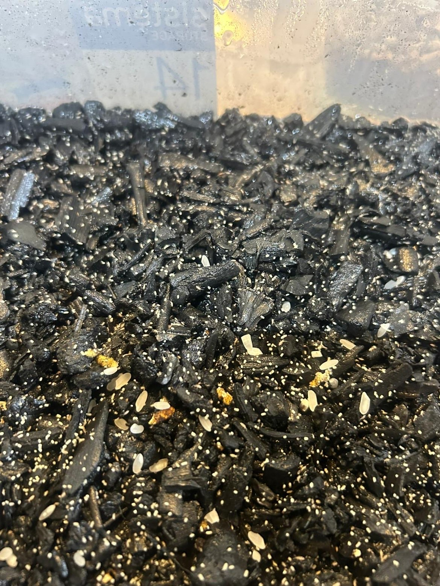
Essential micro-cleanup crew that prevents mould and supports healthy soil ecology.
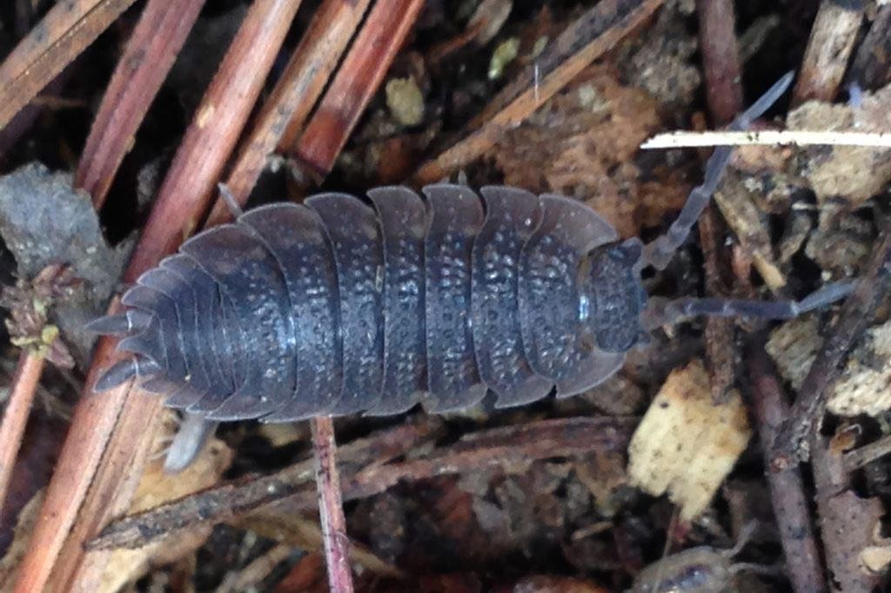
Hardy and adaptable cleanup species suitable for almost any bioactive environment.
Discover the beauty of nature reimagined — each project is a miniature world, crafted with care to highlight biodiversity and ecological harmony.
A visual journey — swipe to begin


Nature-designed ecosystems, built with intention.
Recreate a place from nature you love... We recreate real-world ecosystems from specific locations using authentic plants, terrain, and design to fully capture that environment.
A blend of land and water ecosystems... Enclosed environments combining aquatic and terrestrial zones, perfect for frogs, fish, and invertebrates, creating a dynamic natural ecosystem.
Landscapes designed to support biodiversity... Carefully designed landscapes using local ecosystems to create habitats for native species while improving soil health and sustainability.
Sophisticated aquatic environments designed for longevity... Sophisticated aquatic environments that utilise ecosystem dynamics to create functional, long-lasting systems that bring out natural behaviours and enrich aquatic life.
Terrestrial ecospheres that mimic unique environments around the world... Terrestrial ecospheres that mimic the ancient beauty of unique environments around the world, from tropical rainforests to arid deserts, these enclosed spaces could bring biodiverse complexity to you and your animals.
Discover real-world aquatic environments and bring their beauty into your own tank.
Tap the preview to explore the full maintenance sheet
On mobile? Hit Download PDF to see the complete document

VIEW MAINTENANCE SHEET
Looking for more details or ready to book our services? Simply click below, and we’ll be happy to assist you!